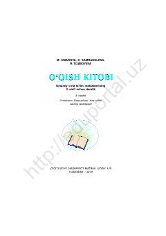

OK3-sinf o‘quvchilari uchun mo‘ljallangan o‘qish darsligi.
Ushbu darslik umumiy o‘rta ta’lim maktablarining 3-sinf o‘quvchilari uchun mo‘ljallangan bo‘lib, o‘qish ko‘nikmalarini rivojlantirishga qaratilgan. Kitobda vatanparvarlik, tabiat va insoniy fazilatlar haqidagi she’rlar, hikoyalar hamda turli topshiriqlar o‘rin olgan.